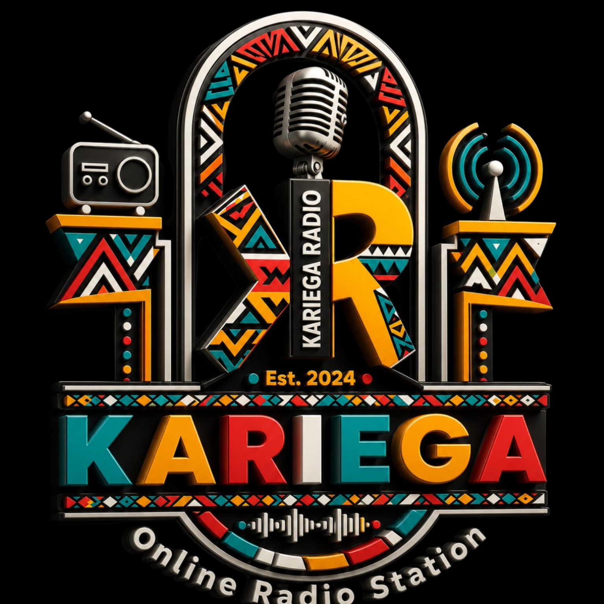

Community
People focused and always connected to our local community.
Singabahlobo Bakho. Proudly Local. Proudly Kariega.

Kariega Online Radio is a community-focused online radio station bringing people together through local voices, music, stories, information and conversations.
Our programming reflects the energy and diversity of Kariega, with space for entertainment, education, sport, faith, wellness, lifestyle and community connection.
“The Voice of Kariega. Singabahlobo Bakho.”
People focused and always connected to our local community.
Great music, engaging programmes and conversations that keep you tuned in.
Giving local and youth voices a platform to be heard.